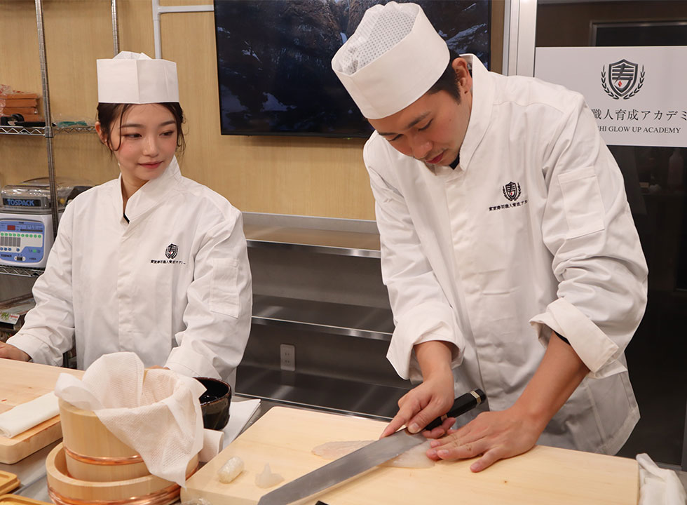
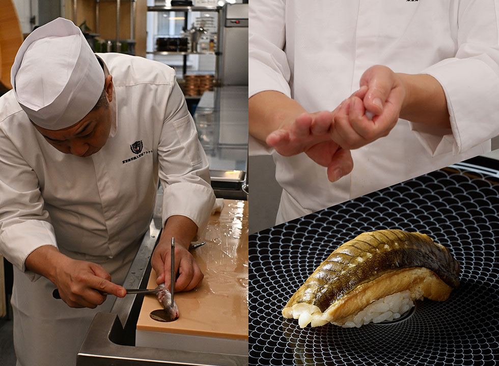

person こんな方が受講
様々な方が一緒に受講しています！
それぞれにあった教え方をしております。
- 全く料理をしたことがないが、寿司職人にキャリアチェンジしたい。
- 飲食店で働いているが、寿司職人になって世界で働きたい。
- 寿司職人になって稼げるようになりたい。

skills 短期で3年目程度の技術を習得
東京寿司職人育成アカデミーでは多くの技術獲得が可能です。
未経験で寿司店に就職した場合、雑用や皿洗いなどが最初メインになってしまい、魚を捌くまでに時間がかかってしまう場合や、握るのがそもそも数年経ってからなどの可能性があります。
東京寿司職人育成アカデミーではすべての時間を魚を捌く、寿司を握る時間に使えるので、未経験で就職するよりも遥かに早いスピードで技術を習得することが可能です。

techniques 寿司の調理技術を習得
代表講師の木立は様々な店舗での経験があり、多くの経験と技術を生徒一人ひとりに伝授いたします。
寿司店の中でも様々な業態がございますが、どこにいっても通用する本物の技術を習得することが可能です。
curriculum カリキュラム
カリキュラムの一例をご紹介します。
| 1週目 | 2週目 | 3週目 | 4週目 | 5週目 | 6週目 | 7週目 | 8週目 |
|---|---|---|---|---|---|---|---|
| 授業内容 | 授業内容 | 授業内容 | 授業内容 | 授業内容 | 授業内容 | 授業内容 | 授業内容 |
| 寿司職人といしての心構えと衛生に関して | 光物の仕込み、切り付け | 光物の仕込み、切り付け | かんぴょうの仕込み | 英語での料理説明 | 光物の仕込み、切り付け（テスト） | 穴子の仕込み （テスト） |
旬の食材の仕込み |
| 道具の扱い方、手入れの仕方 | 〆ものの仕込み切り付け | 〆ものの仕込み切り付け | オボロの仕込み | 豊洲市場見学 | 白身魚の仕込み、切り付け（テスト） | 細巻き（テスト） | お任せの献立作成及び原価計算 （テスト） |
| シャリ酢に関して | 白身魚の仕込み、切り付け | 白身魚の仕込み、切り付け | どんこの仕込み | 光物の仕込み、切り付け（応用） | 冷凍鮪の扱い、切り付け（テスト） | 太巻き（テスト） | お任せの献立試作（テスト） |
| 米のとぎ方、炊き方 | 冷凍鮪と生鮪の扱いと切り付け | 穴子の仕込み、炊き方 | 魚卵の仕込み （いくら、数の子等） |
〆ものの仕込み切り付け（応用） | 貝類の仕込み、切り付け（テスト） | １人前の握り （テスト） |
テスト結果を踏まえ |
| シャリきり | 薬味、妻物、野菜の仕込み（桂向き等） | 原価計算について | 太巻きの巻き方 | 甲殻類の仕込み （応用） |
卵焼きの焼き方、切り付け（テスト） | 原価計算 （テスト） |
毎日仕込んだ食材の握り及び軍艦、巻きの練習 |
| 基本的な光物の仕込み、切り付け | 基本的な貝類の仕込み、切り付け | 甲殻類の仕込み（エビカニ、イカタコ等） | 裏巻きの巻き方（カルフォルニアロール等） | 貝類の仕込み、切り付け（応用） | おまかせの組み立て方について | 旬の食材の仕込み | 及び毎日の反復練習 |
| 基本的な白身魚の仕込み、切り付け | 基本的な卵焼きの焼き方、切り付け | 貝類の仕込み、切り付け（煮蛤等） | 毎日仕込んだ食材の握り及び軍艦、巻きの練習 | 冷凍鮪と生鮪の扱いと切り付け（応用） | 前菜、焼き物、煮物、蒸し物、刺身等について | テスト結果を踏まえ | 寿司佑にて招待客にお任せの提供 |
| 基本的な冷凍鮪の扱い、切り付け | 基本的な細巻きの巻き方 | 調味料について（煮切り、煮ツメ、貝ツメ等） | 及び毎日の反復練習 | 白身魚の仕込み、切り付け（応用） | 旬の食材の仕込み | 毎日仕込んだ食材の握り及び軍艦、巻きの練習 | |
| だしの取り方 | 毎日仕込んだ食材の握り及び軍艦、巻きの練習 | 毎日仕込んだ食材の握り及び軍艦、巻きの練習 | ガリの仕込み | １人前の握りの組み立て方について | 毎日仕込んだ食材の握り及び軍艦、巻きの練習 | 及び毎日の反復練習 | |
| 基本的な薬味、妻物、野菜の仕込み | 及び毎日の反復練習 | 及び毎日の反復練習 | 卵焼きの焼き方、切り付け（カステラ等） | 毎日仕込んだ食材の握り及び軍艦、巻きの練習 | 及び毎日の反復練習 | ||
| 毎日仕込んだ食材の握り及び軍艦、巻きの練習 | 笹切り | 及び毎日の反復練習 | |||||
| 及び毎日の反復練習 | |||||||
| 寿司佑にてランチ |
tuition 受講費用
24回払いで月々33,712 円！
| 入学金 (税込) |
|---|
| 22万円 |
| 授業料 (税込) |
|---|
| 55万円 |